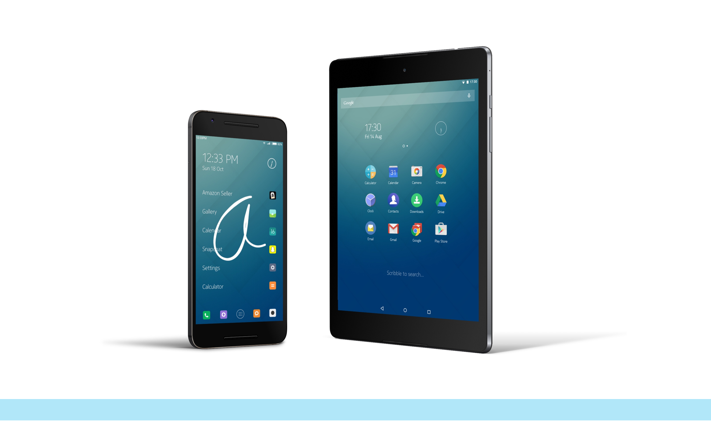
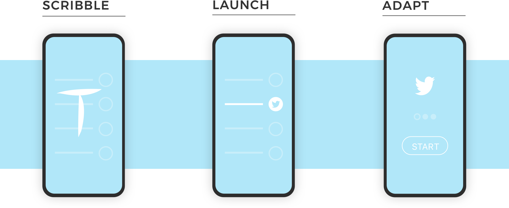
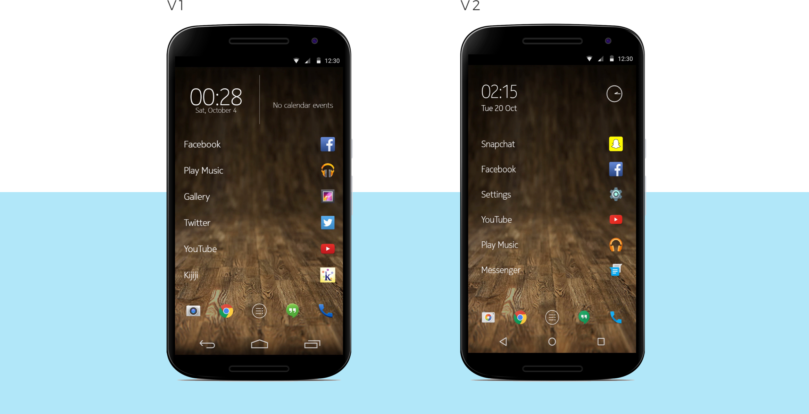
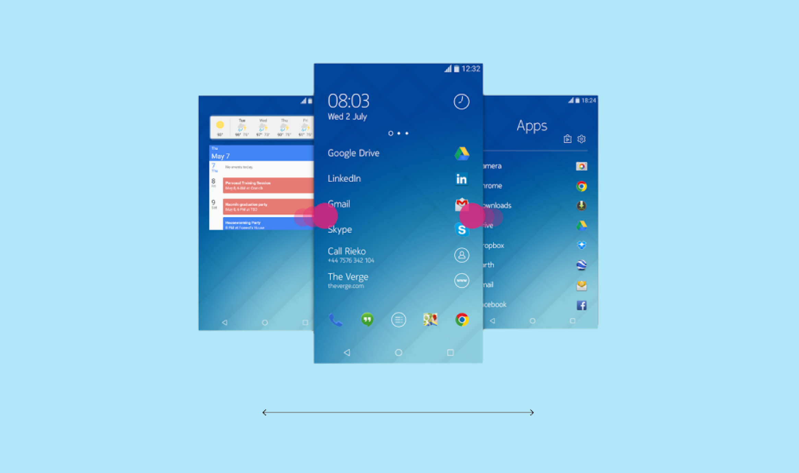

Output
I had the pleasure of collaborating with this small team throughout Z launchers development. I provided contextual feedback, redesigned the UI, and implemented it.
Simple Scribble
The launcher runs on the simple notion of: Scribble, Launch, Adapt. The backbone of the design was for users to be able to access their content quickly and efficiently.
Why re-design
Metrics gave insight into false swipes in Z launcher. Users with smaller screens had issues scribbling in the designated area.
I designed V2 by opening up the top portion of the UI, increasing scribble letter recognition by 34%.
Familiear Feeling
Scraping Google Play Store comments, I interpreted that Android users mostly prefer the standard Android experience.
I designed and implemented the UI and gestures for widget and app drawer panes respectively. This concept is more familer to Android users and was well recieved by customers.
